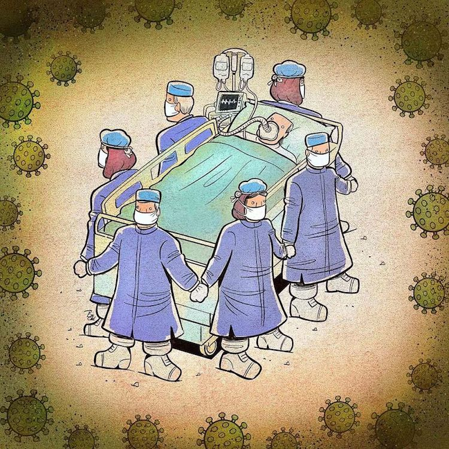

Covid-19 Medications

The most common symptoms of COVID-19 are a fever, coughing, and breathing problems. Unless you have severe symptoms, you can most likely treat them at home, the way you would for a cold or the flu. Most people recover from COVID-19 without the need for hospital care. Call your doctor to ask about whether you should stay home or get medical care in person.
Scientists are trying to make new medicines and test some existing drugs to see whether they can treat COVID-19. In the meantime, there are a number of things that can relieve symptoms, both at home and at the hospital.
At-Home Coronavirus Treatment
If your symptoms are mild enough that you can recover at home, you should:- Rest. It can make you feel better and may speed your recovery.
- Stay home. Don't go to work, school, or public places.
- Drink fluids. You lose more water when you're sick. Dehydration can make symptoms worse and cause other health problems.
- Monitor. If your symptoms get worse, call your doctor right away. Don't go to their office without calling first. They might tell you to stay home, or they may need to take extra steps to protect staff and other patients.
- Ask your doctor about over-the-counter medicines that may help, like acetaminophen to lower your fever.
Coronavirus Treatment in a Hospital
You don't need to go to the hospital or ER if you have basic COVID-19 symptoms, like a mild fever or cough. If you do, many hospitals will send you home. If your case is severe, members of the medical staff will check for signs that the illness is causing more serious problems. They might:
- Check the levels of oxygen in your blood with a clip-on finger monitor
- Listen to your lungs
- Give you a COVID-19 test. This involves putting a 6-inch cotton swab up both sides of your nose for about 15 seconds.
- Give you a chest X-ray or CT scan
You may get extra oxygen through two small tubes that go just inside your nostrils. In very serious cases, doctors will connect you to a machine that can breathe for you, called a ventilator.You may also get fluids through a tube, or IV, in your arm to keep you from getting dehydrated. Doctors will also closely monitor your breathing. The goal is for your infection to run its course and for your lungs to heal enough that they can breathe on their own again.
Your doctors may give you an antiviral medicine called Remdesivir (Veklury). Remdesivir is the first drug approved by the FDA for treatment of hospitalized COVID patients over the age of 12. Research shows that some patients recover faster after taking it. Remdesivir was created to fight Ebola, but the FDA has issued an emergency use ruling so doctors can use it against COVID-19.
Your doctor might also give you medication to thin your blood and prevent clots.If you take drugs such as angiotensin-converting enzyme (ACE) inhibitors, angiotensin receptor blockers (ARBs), or statins for other health problems, your doctor will tell you to continue them as usual. The FDA has issued an emergency use authorization (EUA) for two drugs called monoclonal antibodies to treat COVID-19. Casirivimab and imdevimab can be given to high-risk patients who have recently been diagnosed with mild to moderate illness to lower levels of the virus in their bodies and lower the risk of hospitalization.
Many clinical trials are underway to explore treatments used for other conditions that could fight COVID-19 and to develop new ones. The FDA has also granted an EAU of blood plasma from people who've recovered from COVID-19 in order to help patients with severe or life-threatening cases. You'll hear this called convalescent plasma. Clinical trials are under way for other medications, including tocilizumab, which has been used to treat autoimmune conditions and an inflammatory condition called cytokine release syndrome. The FDA has rescinded its emergency authorization for the use of hydroxychloroquine and chloroquine to treat people who are hospitalized with COVID-19 amid serious concerns about their safety and how well they worked against the virus.
#Healthy At Home: Healthy Diet
 Eating a healthy diet is very important during the COVID-19 pandemic. What we eat and drink can affect our body’s ability to prevent, fight and recover from infections.While no foods or dietary supplements can prevent or cure COVID-19 infection, healthy diets are important for supporting immune systems. Good nutrition can also reduce the likelihood of developing other health problems, including obesity, heart disease, diabetes and some types of cancer.
Eating a healthy diet is very important during the COVID-19 pandemic. What we eat and drink can affect our body’s ability to prevent, fight and recover from infections.While no foods or dietary supplements can prevent or cure COVID-19 infection, healthy diets are important for supporting immune systems. Good nutrition can also reduce the likelihood of developing other health problems, including obesity, heart disease, diabetes and some types of cancer.
For babies, a healthy diet means exclusive breastfeeding in the first six months, with the introduction of nutritious and safe foods to complement breastmilk from age 6 months to 2 years and beyond. For young children, a healthy and balanced diet is essential for growth and development. For older people, it can help to ensure healthier and more active lives.
-
Tips for maintaining a healthy diet:
- Eat a variety of food, including fruits and vegetables.
- Cut back on salt.
- Eat moderate amounts of fats and oils.
- Limit sugar intake.
- Stay hydrated: Drink enough water.
- Avoid hazardous and harmful alcohol use.
#Healthy At Home: Physical activity
 The COVID-19 pandemic means that many of us are staying at home and sitting down more than we usually do. It’s hard for a lot of us to do the sort of exercise we normally do. It’s even harder for people who don’t usually do a lot of physical exercise. But at a time like this, it’s very important for people of all ages and abilities to be as active as possible.
The COVID-19 pandemic means that many of us are staying at home and sitting down more than we usually do. It’s hard for a lot of us to do the sort of exercise we normally do. It’s even harder for people who don’t usually do a lot of physical exercise. But at a time like this, it’s very important for people of all ages and abilities to be as active as possible.
Doing any acivity around the home is better than none at all. Be active during the #covid19 outbreak to maintain your heart health, muscle strength and flexiblity. It is good for your mental health too!!
-
Tips to maintain your mental and physical health:
- Do Excercise and Yoga asanas to stretch and strengthen muscles.
- Dance to musica and Sing a Song to boost mental health.
- Try Skipping rope.
- Walk up and down the stairs.
- Regularly check your sitting posture while working from home.
- Take a short breaks from sitting, by doing 3-4 minutes of light intensity physical movement.
- Seek more ideas & resources online.